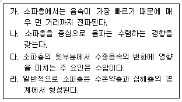
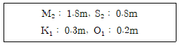
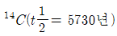
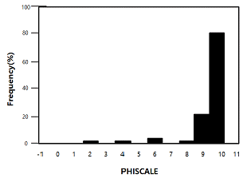

해양조사산업기사 (2019-04-27 기출문제)
1과목: 물리해양학
1. 세계에서 수송량이 가장 많은 해류는?
- 남극순환류
- 북적도 해류
- 오야시오 해류
- 멕시코 만류(Gulf Stream)
(정답률: 79%)

2. 소파층(SOFAR layer)에 관한 다음 설명 중 옳은 것을 모두 고른 것은?

- 가, 나
- 가, 다
- 나, 라
- 다, 라
(정답률: 67%)
3. 세계 대양의 저층수 분포에 가장 크게 영향을 미치는 해류는?
- 남극순환류
- 남적도 해류
- 브라질 해류
- 쿠로시오 해류
(정답률: 85%)
4. 해양에서 적외선 파장을 이용하여 수온을 측정하는 위성 장치는?
- CZCS
- NDVI
- AQUA
- AVHRR
(정답률: 77%)
5. 온위(potential temperature)에 대한 설명으로 옳은 것은?
- 대기압 상태의 온도
- 해수가 가질 수 있는 잠재적 온도
- 어떤 수심의 물을 단열적으로 기준이 되는 깊이로 가져왔을 때 그 물이 가지는 온도
- 어떤 수심의 물을 천천히 일정 깊이로 가져 왔을 때 처음 온도에 비해 증감된 온도
(정답률: 80%)
6. 다음 중 해양표면에서 대기로의 열 전달이 가장 활발하게 일어나는 경우는? (단, Ta : 기온, Tb : 표층수온이며, 풍속은 일정하다.)
- Ta > Tb
- Ta = Tb
- Ta < Tb
- Ta와 Tb에 무관
(정답률: 81%)
7. 에크만 수송에 작용하는 힘은?
- 마찰력, 중력
- 수압경도력, 중력
- 전향력, 수압경도력
- 전향력, 바람의 응력
(정답률: 74%)
8. 직접 해류 측정이 가능한 기기는?
- CTD
- ADCP
- NOAA-11
- Echo-Sounder
(정답률: 80%)
9. 파고 2m, 주기 10초인 심해파에서 표면 물입자의 이동속도는?
- 약 0.1m/s
- 약 0.6m/s
- 약 1m/s
- 약 2m/s
(정답률: 56%)
10. 밀도와 비용에 대한 설명 중 옳은 것은?
- 밀도가 증가하면 비용도 증가한다.
- 밀도가 증가하면 비용은 감소한다.
- 수온이 증가하면 밀도가 증가한다.
- 염분이 감소하면 밀도가 증가한다.
(정답률: 72%)
11. 어느 항구의 4대 분조의 반조차가 다음과 같다면 이 항구의 조석 형태는?

- 일주조형
- 혼합조형
- 반일주조형
- 태음분조형
(정답률: 83%)
12. 다음 중 다른 해역에 비해 조류가 강한 이유가 다른 해역은?
- 인천
- 울돌목
- 노량해협
- 맹골수도
(정답률: 82%)
13. 대양에서 발생한 태풍 반경 내에서 주기 10초, 파고 12m의 매우 발달된 파랑이 관측되었다. 이 파의 파속은?
- 약 9.9m/s
- 약 10.8m/s
- 약 13.0m/s
- 약 15.6m/s
(정답률: 48%)
14. 다음 중 대량의 표층수가 냉각, 침강하여 심층수로 변하는 해역은?
- 인도양 북부 해역
- 북태평양 북부 해역
- 북대서양 북부 해역
- 알래스카 북부 해역
(정답률: 67%)
15. 다음 중 해수의 연직 안정도가 가장 높은 경우는? (단, p1: 상층해수 밀도, p2: 하층해수 밀도)
- p1 >p2
- p1= p2
- p1< p2
- 밀도에 관계 없음
(정답률: 83%)
16. 지형류(geostrophic current)의 방향은?
- 해안선에 평행
- 등고선에 수직
- 등압선에 평행
- 등압선에 수직
(정답률: 73%)
17. 우리나라 근해의 해류에 있어서 전향력(Coriolis force)이 작용하는 방향은?
- 진행방향의 뒤쪽
- 진행방향의 앞쪽
- 진행방향의 왼쪽
- 진행방향의 오른쪽
(정답률: 85%)
18. 유의파고(significant wave height)란 파고가 큰 것부터 얼마까지의 평균에 해당되는 파고인가?
- 1/2
- 1/3
- 1/5
- 1/10
(정답률: 79%)
19. 수온약층에 관한 설명으로 틀린 것은?
- 수온약층은 수직안정도가 대단히 크다.
- 계절수온약층은 온대해양에서 가장 많이 나타난다.
- 영구수온약층은 한 대해양과 열대해양에서만 볼 수 있다.
- 깊이에 따라 수직온도의 경도가 급격한 층을 수온약층이라 한다.
(정답률: 79%)
20. 조석조화상수에 관한 설명으로 틀린 것은?
- 우리나라 조화상수의 기준은 인천항이다.
- 조화상수를 이용하여 조석예보를 할 수 있다.
- 조화상수는 반조차(진폭)와 지각으로 구성된다.
- 조화상수를 구하기 위해서는 조석관측 자료가 필요하다.
(정답률: 64%)
2과목: 화학해양학
21. 해수중 화학적산소요구량(COD)을 측정하는 방법으로서, 다음 중 가장 적합한 것은?
- 윙클러법
- 티오황산나트륨법
- 산성 100℃ 과망간산칼륨법
- 알칼리성 100℃ 과망간산칼륨법
(정답률: 68%)
22. 다음 원수 중 해수중 농도가 가장 높은 원소는?
- Ca2+
- K+
- Mg2+
- Na+
(정답률: 78%)
23. 비색법에 있어서 발색반응에 영향을 주는 요인에 대한 설명으로 옳은 것은?
- 시약의 첨가량과 관계없다.
- 발색 시 용액의 pH와는 관계없다.
- 발색 시 온도에 따른 영향이 크다.
- 시약의 첨가순서는 영향을 주지 않는다.
(정답률: 75%)
24. 적조생물의 구제 또는 제거방법이 아닌 것은?
- 점토살포법
- Bio-control법
- 영양물질제어법
- 화학약품살포법
(정답률: 62%)
25. 윙클러(winkler)법에 의하여 해수중에 있는 용존산소량을 측정하고자 시료를 처리할 때 오차의 원인과 가장 거리가 먼 것은?
- 시료의 염분
- 채수 시 발생하는 기포
- 시료 속에 존재하는 산화환원 물질
- 티오황산나트륨으로 적정 시 유리된 요오드의 증발
(정답률: 65%)
26. 다음 중 편모조류로 인한 적조 발생의 주 요인이 되는 물질은?
- 규산염
- 중금속
- 염화탄화수소
- 유리성 생활 오폐수
(정답률: 71%)
27. 해수중 입자성물질과 용존성물질을 나누는 여과지의 공경은?
- 0.20nm
- 0.20um
- 0.45nm
- 0.45um
(정답률: 66%)
28. 해수에서 다음 질소원소 중 식물플랑크톤에 의해 가장 우선적으로 취해지는 것은?
- N2
- NO2-
- No3-
- NH4+
(정답률: 63%)
29. 해수중의 Na(분자량 23) 농도 표시 중 몰농도값이 가장 큰 것은?
- 20ppm
- 20mg/L
- 20mM
- 0.2g/L
(정답률: 69%)
30. 질소는 비교적 불활성 기체로, 해수중에 대략 몇 ppm 정도가 존재하는가?
- 0-2ppm
- 3-9ppm
- 10-18ppm
- 64-107ppm
(정답률: 67%)
31. 대양에서 수괴의 기원을 파악하는데 가장 유용한 동위원소 추적자는?
- 234U
- 228Ra
- 137Cs
- 18C/16O
(정답률: 61%)
32. 적조(Red tide)는 수중의 적조원인 생물이 환경 변화에 의해 돌발적으로 이상 대번식을 일으켜 수색을 변화시키는 일종의 부영양화 현상이다. 적조가 환경에 끼치는 영향이 아닌 것은?
- 생물농축에 의한 중독현상
- 편모조류의 독성물질에 의한 치사효과
- 대량 번식 후 분해과정에서의 산소고갈
- 적조원인 생물이 분비하는 점액질에 의한 호흡방해
(정답률: 64%)
33. pH 5인 해수를 pH 7로 증가시키면 수소이온농도(H+)는 어떻게 변하는가?
- 2배 증가
- 2배 감소
- 100배 증가
- 100배 감소
(정답률: 72%)
34. 일반 해양에서 탄소의 순환에 영향을 가장 적게 미치는 것은?
- 유기물의 침강
- 유기물의 분해
- 해양생물의 성장
- 표층 산소의 대기 방출
(정답률: 68%)
35. 다음 금속원소 중 환원환경하에서 퇴적물로부터 저층수 중으로 용출되는 원소는?
- 크롬
- 망간
- 토륨
- 알루미늄
(정답률: 54%)
36. 물이 든 비커에 소금을 넣고 잘 저어서 완전히 녹였을 때 관측되는 현상으로 맞는 것은?
- 비커 안 용액의 부피는 줄어든다.
- 비커 안 용액의 부피는 늘어난다.
- 비커 안 용액의 부피는 변화가 없다.
- 비커 안 용액의 부피는 줄었다가 늘어나는 것을 불규칙하게 반복한다.
(정답률: 64%)
37. 해수중의 탄산가스 공급원이 아닌 것은?
- 대기
- 해산동물의 호흡작용
- 해산식물의 동화작용
- 유기물질의 부패분해
(정답률: 71%)
38. 해양화학에서 추적자(tracer)로 흔히 사용하는 방사선 원소인

가 현재 1mg 존재한다면, 57300 후에는 대략 얼마만큼 존재하겠는가? (단, 방사능 붕괴 법칙인 N=NOe-λt식을 이용할 것 e6.93=1022)- 1mg
- 0.1mg
- 0.5mg
- 1ug
(정답률: 57%)
39. 해수에 녹아 있는 성분 중 생물비제한(bio-unlimited) 성분은?
- SO42-
- NO3-
- PO43-
- Ca2+
(정답률: 59%)
40. 해수중 생물체의 질소와 인의 구성비(N/P)는?
- 1
- 15
- 60
- 106
(정답률: 70%)
3과목: 생물해양학
41. 동물 플랑크톤의 수직 회유 현상에 대한 설명으로 틀린 것은?
- 식물 플랑크톤을 먹기 위해 표면으로 올라온다.
- 표층의 강한 태양광선을 피하여 심층으로 내려간다.
- 적정 조도의 수층(水層)을 따라 수직이동 한다.
- 적정 온도의 수층을 따라 수직 이동한다.
(정답률: 70%)
42. 보상심도(Compensation depth)에서 광합성에 의하여 생산된 O2의 양과 호흡에 의하여 소비되는 O2양의 관계는?
- 생산된 O2의 양과 소비된 O2의 양이 같다.
- 광합성으로 생산된 O2의 양이 많다.
- 호흡에 소비되는 O2의 양이 많다.
- O2의 양과는 관계가 없다.
(정답률: 80%)
43. 다음 중 어류의 연령을 사정하기 위하여 가장 많이 사용되는 형질은?
- 항문
- 위
- 이빨
- 이석
(정답률: 75%)
44. 해조류 생식방법에 대한 설명 중 틀린 것은?
- 포자체와 배우체의 형태가 다른 세대교번을 이형세대교번이라고 한다.
- 다시마는 이형세대교번을 하는 대표적인 해조류이다.
- 우리가 즐겨 먹는 김은 일반적으로 동형세대교번을 하는 해조류이다.
- 핵상이 단상인 세대를 무성세대, 복상인 세대를 유성세대라고 한다.
(정답률: 68%)
45. 조간대 식물의 질소고정 작용과 가장 관계가 깊은 것은?
- 녹조류
- 규조류
- 무절산호조류
- 남조류
(정답률: 64%)
46. 다음 부유생물 중 자웅동체인 것은?
- 갑각류
- 모악류
- 연체류
- 단각류
(정답률: 67%)
47. 하구역의 환경에 대한 설명으로 옳지 않은 것은?
- 형성요인에 따라 그 지형의 특성을 크게 해안평원하구역, 구조하구역, 협만하구역, 반폐쇄석호하구역의 4가지로 구분한다.
- 하구역에서는 강으로부터 유입된 퇴적물입자 및 유기입자 등이 쌓여 조립질의 퇴적층을 형성된다.
- 연악역 중 담수와 해수가 만나는 강하구 수역이다.
- 하구역의 생물들은 대부분 광염성, 광온성 종들이다.
(정답률: 70%)
48. 다음 중 생물 두 종간의 편리공생을 가장 잘 설명하는 것은?
- 한 종은 이익을 보고 한 종은 손해를 본다.
- 한 종은 이익을 보고 한 종은 이익도 손해도 없다.
- 두 종 모두 이익을 본다.
- 두 종 모두 손해를 본다.
(정답률: 78%)
49. 해산 포유류에 대한 설명으로 잘못된 것은?
- 온도가 낮은 해수에 의한 열 손실을 줄이기 위해 체표면 체중의 비를 증가시킨다.
- 잠수병을 일으키지 않기 위하여 잠수할 동안 폐에서의 공기교환이 일시 중단된다.
- 장시간 수중에서 지내기 위하여 혈액 속 산소 저장 능력이 탁월하다.
- 고래는 체온을 유지하기 위하여 피하지방을 발달시킨다.
(정답률: 67%)
50. 연체동물에 속하지 않는 것은?
- 따개비
- 전복
- 굴
- 담치
(정답률: 74%)
51. 썰물 대 대기에 노출되기도 하며, 광, 수온, 염분 등에 의한 환경변화가 심한 곳은?
- 조간대
- 조하대
- 대륙붕
- 심해
(정답률: 83%)
52. 다음 어류 중 알을 낳지 않는 것은?
- 갈치
- 망상어
- 가물치
- 연어
(정답률: 76%)
53. 다음 중 해양생태게의 에너지 흐름에 있어서 가장 중요한 동물 플랑크톤은?
- 물벼룩류
- 갯지렁이류
- 요각류
- 만각류
(정답률: 72%)
54. 해양동물에게 강한 독성을 지니고 기형적인 성장과 생식불능이 되는 임포섹스(imposex)현상을 유발하는 해양오염물은?
- 유기주석(TBT)
- 염화 탄화수소(PCBs)
- DDT
- 석유탄화수소
(정답률: 68%)
55. 다음 중 적조를 가장 잘 설명한 것은?
- 화학물질에 의한 바다의 색깔변화
- 공장에서 나오는 염료에 의하여 바닷물의 색깔이 변하는 현상
- 강우나 준설 같은 것으로 인하여 바닷물의 색깔이 변하는 현상
- 환경조건이 좋아서 물에 플랑크톤이 단시간 내에 과다하게 번식하여 바다의 색깔이 변하는 현상
(정답률: 86%)
56. 다음 중 홍수림(맹그로브 숲)이 번성하는 환경은?
- 극지고산대
- 온대연안
- 열대연안
- 대양중앙부
(정답률: 82%)
57. 육상생물과 비교할 때 해양생물의 특징으로 옳은 것은?
- 단단한 지지조직이 필요하다
- 대부분 항온동물이다
- 초식동물의 크기가 작다
- 체내에 많은 에너지를 저장한다.
(정답률: 70%)
58. 광합성 임계 수심(critical depth)에 대한 설명으로 맞는 것은?
- 순생산율이 최대가 되는 깊이
- 광합성률과 호흡률이 같은 깊이
- 수층 총 생산량과 수층 총 호흡량이 같아지는 깊이
- 일반적으로 임계 깊이는 보상 깊이보다 얕다.
(정답률: 59%)
59. 산호의 몸속에 있는 공생 단세포 식물 세포를 일컫는 말은?
- zooxanthellae
- zooplankton
- phytocell
- parasite
(정답률: 70%)
60. 해양에서 탈질화 과정에 대한 설명으로 맞는 것은?
- 산소가 풍부한 환경에서 일어난다
- 결과적으로 해양에서 질소 가스의 증가 요인이다.
- 최종적으로 질산염이 만들어진다.
- 일종의 산화과정이다.
(정답률: 51%)
4과목: 지질해양학
61. 전형적인 해양 지각(oceanic crust)을 이루는 암석은?
- 변성암
- 퇴적암
- 현무암
- 화강암
(정답률: 77%)
62. 연흔(ripple mark)과 관계없는 사항은?
- 조류가 흐르고 있다.
- 심해저에서도 나타난다.
- 해류의 방향을 지시해 준다.
- 자갈 크기의 입자로 구성된 퇴적층에서만 볼 수 있다.
(정답률: 76%)
63. 우리나라 해안 중 해침에 의해 리아스식(ria type) 해안선을 이루고 조간대가 가장 넓게 발달한 곳은?
- 남해안
- 서해안
- 동해북부해안
- 동해남부해안
(정답률: 72%)
64. 해양퇴적물의 입도분석 과정에서 모래입자와 이토(mud)입자를 구분하기 위하여 습식체질을 할 때 사용되는 체는?
- 1ø
- 2ø
- 3ø
- 4ø
(정답률: 72%)
65. 해양퇴적물의 일반적인 내용 중 틀린 것은?
- 해저에는 예외 없이 퇴적물이 발달되어 있다.
- 퇴적물은 주로 성분과 조직을 기초로 하여 분류한다.
- 퇴적물의 성분과 조직은 퇴적물의 근원과 퇴적환경을 지시한다.
- 퇴적물의 조직은 주로 퇴적물과 물운동과의 관계를 지시한다.
(정답률: 73%)
66. 태평양 심해저 표층에서 발견되는 광물자원 중 가장 많이 분포하는 광물은?
- 석유
- 망간단괴
- 인광단괴
- 천연가스
(정답률: 83%)
67. 퇴적물의 운반과정에 관한 설명 줄 틀린 것은?
- 퇴적물 운반은 해빈과 쇄파대에서 가장 크게 일어난다.
- 퇴적물의 조직과 배열은 운반의 요인인 동시에 결과이다.
- 연안류나 조류는 퇴적물을 연안에 평행한 방향으로 운반한다.
- 점토는 입자 크기가 작으므로 재운반시에는 실트보다 작은 유속이 필요하다.
(정답률: 72%)
68. 대륙대(continental rise)와 가장 관계가 깊은 것은?
- 단층에 의한 것이다.
- 해저 확장이론과 관련된다.
- 해저 저탁류와 관계가 깊다.
- 해저 화산활동에 의한 것이다.
(정답률: 57%)
69. 해저하부 30m 정도의 깊이에 있는 퇴적물과 암층을 종단면도로 나타낼 때 가장 정확한 지구물리학적 탐사방법은?
- 자력탐사법
- 탄성파탐사법
- 열류량 측정법
- 해양중력탐사법
(정답률: 77%)
70. 해양지각의 평균밀도로 가장 적절한 것은?
- 약 2.9g/cm3
- 약 4.5g/cm3
- 약 11.8g/cm3
- 약 16.0g/cm3
(정답률: 51%)
71. 심해저 퇴적물의 특성에 대한 설명 중 틀린 것은?
- 퇴적물은 대부분 두껍게 발달된다.
- 다른 해양환경에 비해 비교적 단조롭다.
- 층서학적으로 볼 때 균질한 퇴적환경이다.
- 대륙 주변부의 육지기원 퇴적물도 저탁류에 의해 심해저에 도달한다.
(정답률: 75%)
72. 해빈(beach) 퇴적물을 이루는 광물 중 가장 흔한 것은?
- 석영
- 감람석
- 각섬석
- 에피도르
(정답률: 69%)
73. 다음 중 해저 선상지에서 주로 발견되는 퇴적물(암)은?
- 산호초
- 암염층
- 저탁암
- 적색점토
(정답률: 59%)
74. 어떤 해저퇴적물의 입도분포 히스토그램에 관한 다음 설명 중 틀린 것은?

- 퇴적물의 분급도가 비교적 양호하다.
- 모래(Sand)퇴적물이 거의 존재하지 않는다.
- 퇴적물의 평균입도(Mean) 값은 약 9~10Φ정도이다.
- 전체적으로 자갈(Gravel)이 우세한 퇴적환경이다.
(정답률: 62%)
75. 다음 중 열류량이 가장 낮은 곳은?
- 열점
- 해구
- 해저산맥
- 심해저평원
(정답률: 55%)
76. 일반적으로 쐐기모양을 하며 육성퇴적물로 구성되고 상부층(topset beds), 전면층(foreset beds), 하부층(bottomset beds)으로 구분될 수 있는 연안환경은?
- 만
- 초호
- 하구
- 삼각주
(정답률: 72%)
77. 초호를 둘러싸는 원형 또는 거의 원형에 가까운 모양을 가진 초는?
- 환초(atoll)
- 보초(barrier reef)
- 판상초(table reef)
- 거초(fringing reef)
(정답률: 78%)
78. 퇴적물의 조직 성숙도에 관한 설명 중 틀린 것은?
- 일반적으로 해빈퇴적층은 성숙의 범주에 속한다.
- 미성숙은 분급은 양호하나 원마도가 불량하다.
- 퇴적환경에 있어서의 물리적 에너지 측정은 성숙도의 비교로 가능하다.
- 퇴적물은 세립질 물질이 제거되고 분급도가 좋아지며 입자가 원마되면서 조직이 성숙해진다.
(정답률: 59%)
79. 망간단괴(manganese nodule)가 가장 많이 발달하는 곳은?
- 수심 30-70m의 해저
- 수심 100-200m의 해저
- 수심 1000-1500m의 해저
- 수심 4000-5000m의 해저
(정답률: 70%)
80. 해저표면의 지형적인 특성을 조사하는 데 사용될 수 있는 탐사방법이 아닌 것은?
- 인공위성
- 탄성파 굴절법
- 다중빔 음향탐사기(multi-beam sonar)
- 측면주사 음향탐사기(side-scan sonar)
(정답률: 43%)